Mobile app that helps people build sustainable habits through gamified experiences
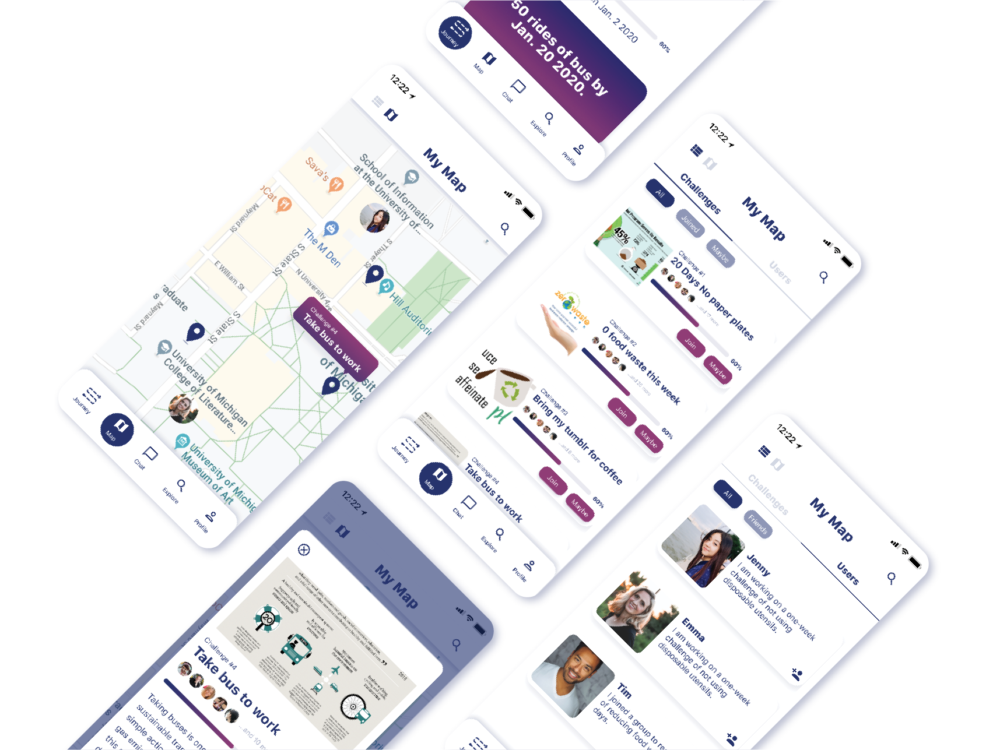
Project overview
How the story began
People care about the environment and are eager to contribute by building an eco-friendly lifestyle. However, developing sustainable habits alone is never easy. From 10 in-depth interviews with potential users, we found people feel helpless, lonely, and unmotivated in this journey. Thus, we would like to present a mobile app idea that gamifies traditional habit-forming experiences.
Our solution, CHANGE, offers structured steps with tips to help users achieve personal goals, visualizes their achievements in journey maps, and motivates them through team challenges that bring in communities to support them along the way.
Role
UX designer and researcher from Oct. 2019 - Jan. 2020
Team
Hsin-Yu Yang, Joseph Henrichs
Type
Side project, submitted to CHI 2020
Solution
Final design highlights
Community map: connect users to support each other
The local community map helps users better connect with others around the same geological area. The feature brings people with the same interests in building sustainable habits together.
Group challenge: strengthen motivation through competitions and collaborations
To strengthen the sense of belonging, we designed the group challenge feature to create gameful experiences. We hope to transform the traditionally more personal journey to a shared one where users contribute their parts to achieve bigger goals as a team.
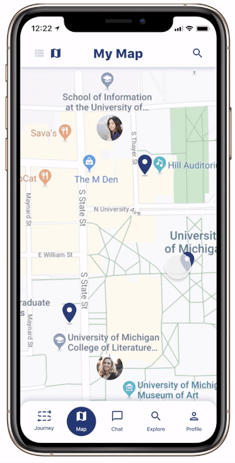
Personal challenge: provide rewards and encourage reflections
The feature sets up a stage for users who would like to keep goals personal. Not everyone enjoys competitions, and we hear that. Personal challenges nudge people to reflect on their journeys through self-ratings. To connect the virtual experience with people’s daily life, we propose real-world rewards as incentives to motivate them more.
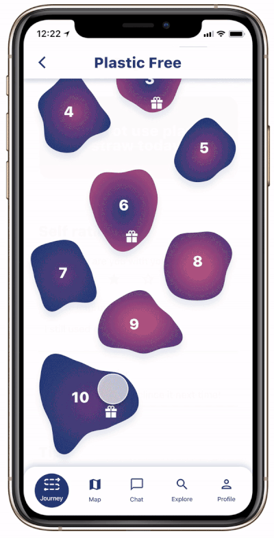
Research
10 in-depth Interviews
To understand people’s thoughts on sustainability and their current lifestyles, we interviewed ten potential users representing different stages of life, academic focuses, and cultural backgrounds. Participants include 1 Korean, 1 Chinese, 3 Taiwanese, and 5 Americans. All are between 20-50 years old and living in the USA.
Before conducting the interviews, we worked on interview protocols that focused on participants’ lunch journeys with three different overarching questions:
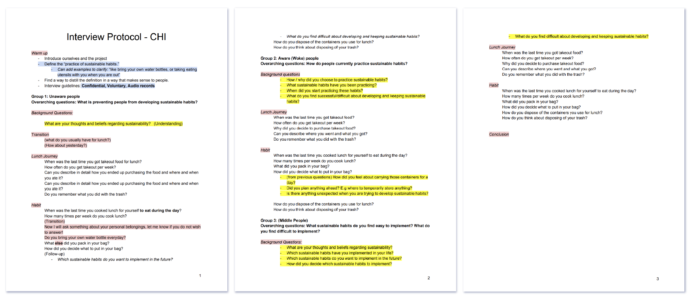
Tailored user interview protocol
We started each interview with more general questions inquiring about the participant’s prior experience in practicing sustainable habits. Based on that response, we made a quick decision to place the participant into one of the 3 following groups:
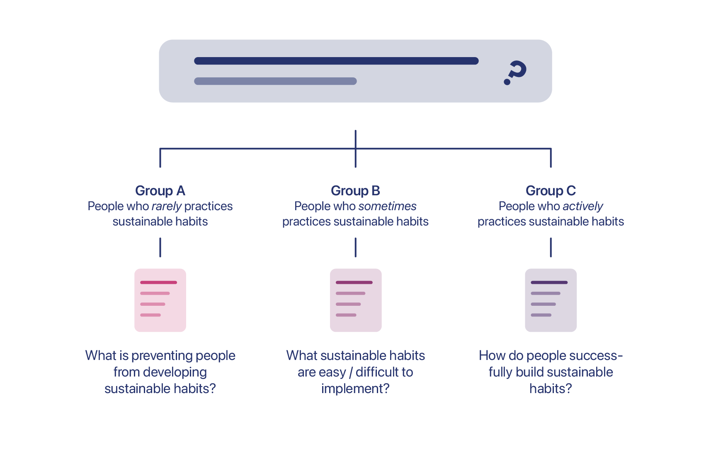
Overarching questions for different user groups
Synthesize interview findings with affinity diagram
After conducting the interviews, we collected insights gathered from participants and created affinity notes on yellow digital post-its during team interpretation sessions.
We first clustered the notes with similar concepts to larger groups and gave each of them a red post-it with a summary of the group. We repeated this process several times until the trend and structure unfolded./p>
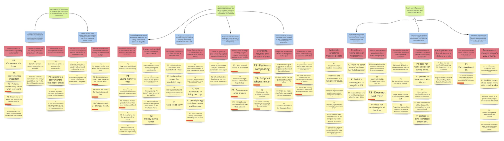
Affinity diagram built in Miro
Findings
Insights and inspirations gained from user interviews
The affinity wall unfolds the following three deciding factors that have a significant influence on people’s behaviors when they are trying to pursue a more sustainable lifestyle.
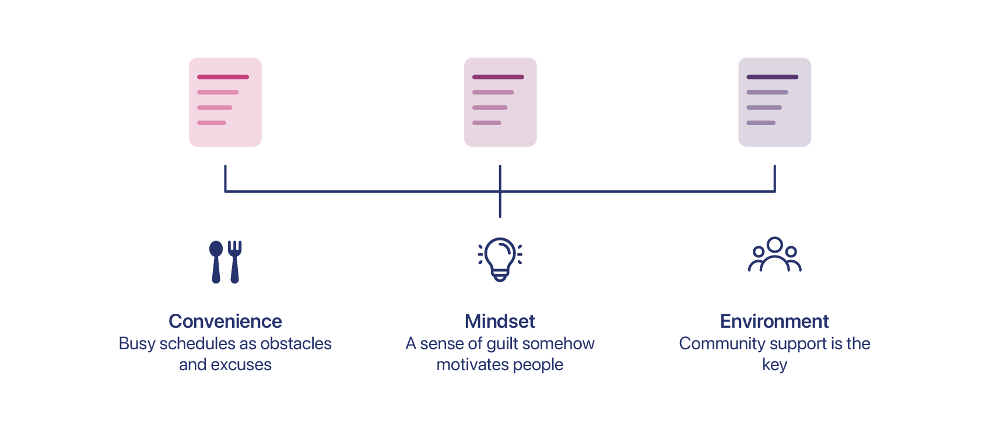
Keey findings from 10 user interviews
Ideation
3 design goals based on user interview findings
Considering that our interviewees are mostly in their 20s and 30s, we decided to narrow down our target users to college students and young professionals for they have more control over making decisions on preferable lifestyles.
According to our findings, we came up with the following goals that we want our design to achieve:
1.
Design an intriguing and enlightening habit-forming experience
2.
Create a virtual community that motivates users to build sustainable habits together
3.
Develop systematic plans that introduce users to ways to lead a more environmentally friendly lifestyle
Brainstorm with sketches
Having the above in mind, we brainstormed and sketched to visualize our ideas. Below are some ideas I proposed with sketches.
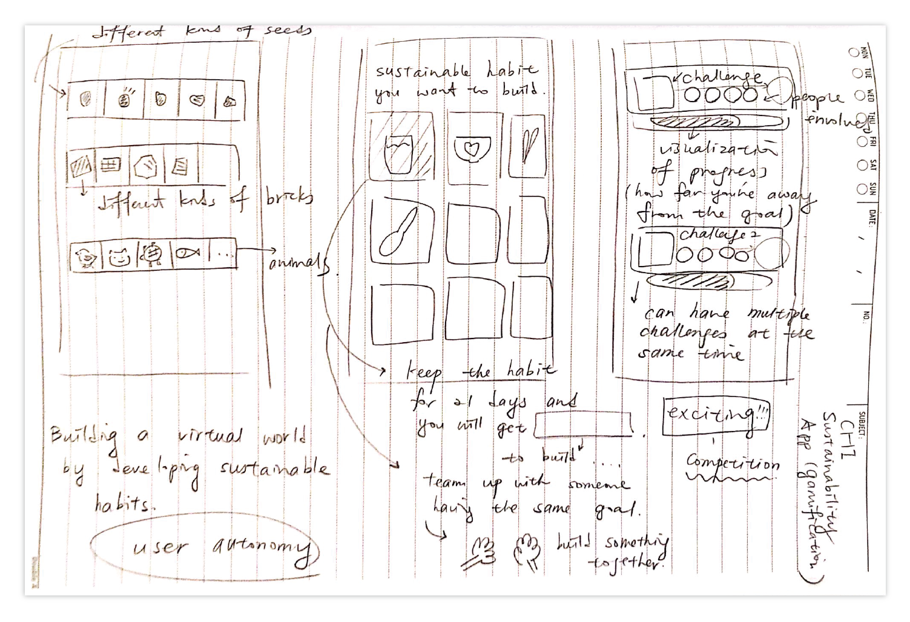
3 ideas sketched out by me
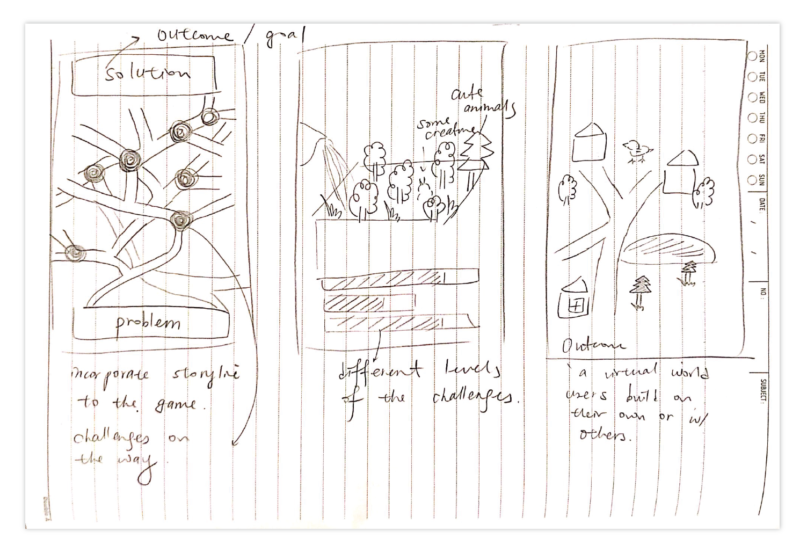
More sketches to visualize ideas
Among the 15 solutions, we picked the ones that have great potential to entertain, help users build sustainable habits effectively, and connect them to support each other.
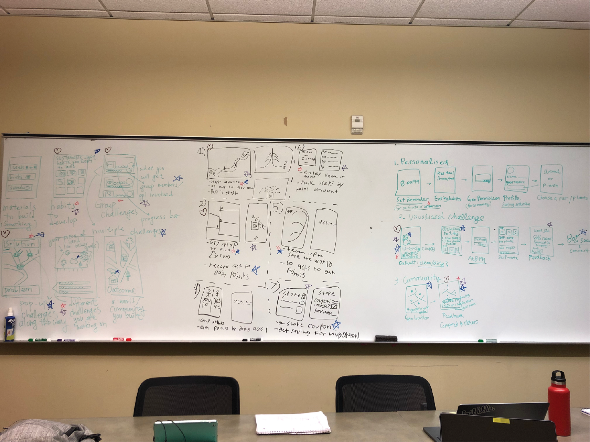
Voting for our favorite ideas on the whiteboard
Design
Fleshing out ideas with wireframes
In the stage of constructing wireframes, we created several versions of each interaction. During our meetings, we gave each other feedback and ran initial user tests to see which meet users' needs and are more intuitive.
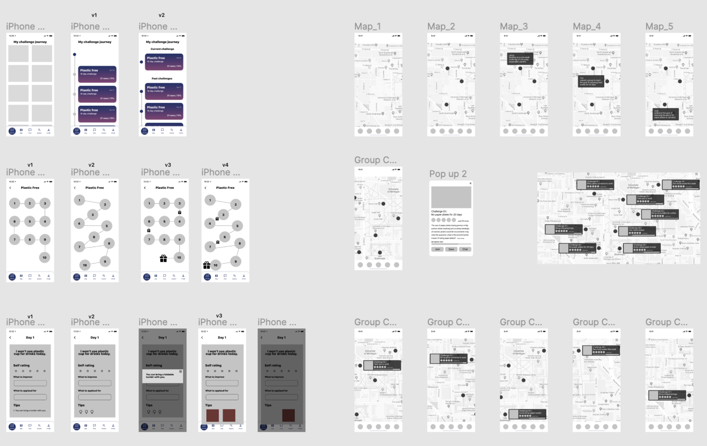
Wireframes created in Figma Team
Design iteration based on micro-user tests
Internal design critiques and feedback from micro-usability tests helped us make the following three design decisions.
Design decision 1: Tap to view a group challenge
Displaying all challenge cards at once might make users more thrilled by the popularity of people practicing sustainable habits together. However, if more than 4-5 group challenges are on users’ screens at the same time, it becomes difficult to see the map itself.
As a compromise, we decided to keep all group challenge locations but show details only when users tap the icons.
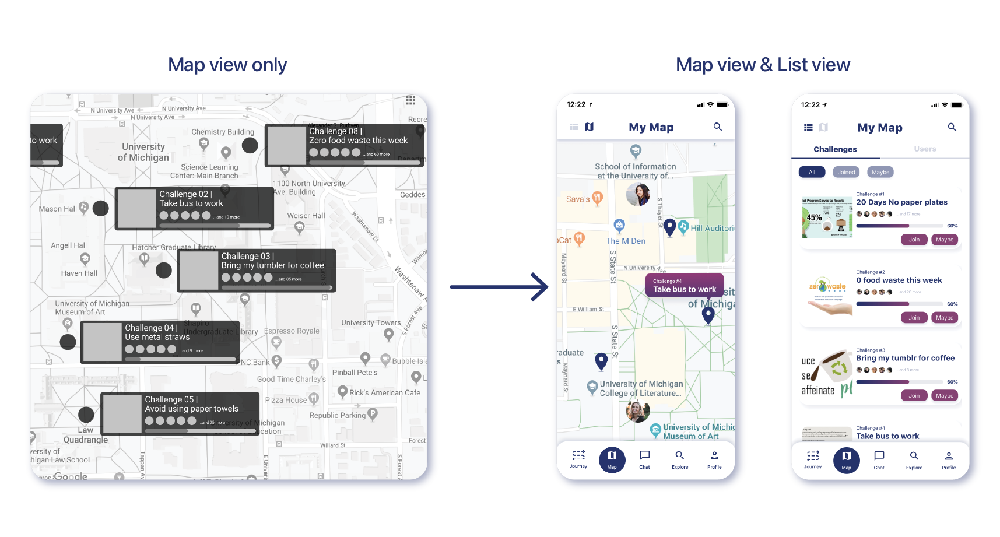
1st design decision
Design decision 2: Limit information displayed in Map View and show details later
Since the size of each challenge card is limited, we decided to show partial information such as the title of the challenges only. Also, we hope the mobile app can not only help people build sustainable habits but also educate them.
Thus, I proposed to add a short paragraph about the concepts behind each act and show progress bars to motivate users to participate in group challenges.
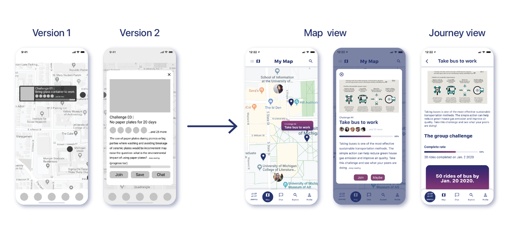
2nd design decision
Design decision 3: Merging personal and group challenges
After simplifying the content displayed on group challenge cards, Map View became more visually appealing as it shows just the right amount of information.
To implement the idea across the entire design system, we agreed to merge personal accomplishment and group challenge icons so that users do not have to jump between two different Map pages.
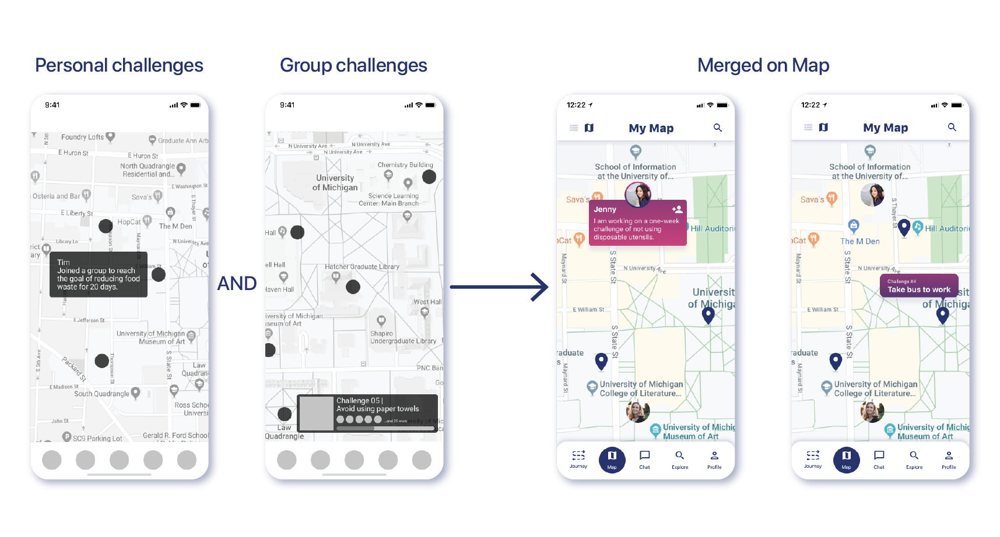
3rd design decision
Final deliverable
Finally, 2 features combined!
Our project consisted of 2 parts – Journey and Map. After initial research done with the entire team, I spent most of my time working on the Map features. Thus, the above are mostly about Map. The video below shows you how the entire product looks like:
Final interactions created by the team
Takeaway
Team building is the foundation of a good product
Product design requires different expertise, and working in a psychologically safe team where people care about each other makes the process less daunting. When we started in early October, we quickly realized that since participating in the CHI Game Competition was not mandatory, people are free to decide how much effort and time they would like to devote. At first, the team experienced several times people not showing up in meetings and leaving the project group entirely without notifying others.
To better support the team, I developed a habit of sending messages to people who did not show up in meetings to show that we value their participation and would like to provide help if possible. It turned out that the strategy worked out well. The number of team members stopped decreasing, and we were finally able to push forward.